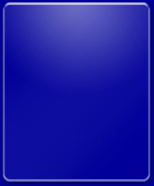

|
|
Most of the controls and screens that run inside the MediaPortal engine use images to generate their look and feel. While this gives the designer a lot of flexibility and ultimate control over the appearance of the screen or control they are working on, it also presents some problems. Most of these problems are due to the fact that when a control is resized, and its appearance is reliant on images, then these images are also resized. Resizing images tends to distort and pixelate the image, and thus the control does not "look" right. This is demonstrated below.
| FIGURE 1 - A typical control rendered using a single image. |
The above diagram shows what a button will look like when it is rendered using a single image and sized to 170 pixels (width) by 38 pixels (height). If the control maintains the same 170x38 dimensions, then the control will always render correctly. However, this is not the case if the control is resized.
| FIGURE 2 - Another control rendered using the same image as the above example, but with a size that is different then the image. |
This diagram illustrates what happens when an image is used to render a button that is not the same size as this image. To accommodate the size of the control, the image needs to be stretched. This stretching causes the rendering to become pixelated, especially in detailed areas and edges. Therefore, if the skin designer wants to create a skin that does not suffer from image stretching, a different image would have to be created for every button that is going to be a different size. This is definitely not a desirable solution as it would be almost impossible to determine ahead of time the sizes of all possible buttons.
In order to solve the problem, a common pattern can be applied that has been used by web designers for quite some time now. Essentially what is done, is the image is split into several regions. These regions can then be combined together in an intelligent way to produce the final image. This process will highly reduce and in some cases completely eliminate the undesirable effects produced by stretching images. Using our example from above, the image will be split into three regions.
|
|||
| FIGURE 3 - Splitting the image into three regions. |
As illustrated in FIGURE 3, the original button image has been split into three regions. The first region will be used to render the left side of the button, the second, to render the middle or content area of the button, and the third, to render the right side of the button. These regions will then be combined as follows. The first region and third regions will never be stretched. The second region will then be stretched to be the width of the button minus the width of the first and third regions. For example: If the first and third regions have a width of 10 pixels, and we want a button to be 200 pixels wide, then middle image would be stretched to 200 - 10 - 10 = 180 pixels. Since the middle region does not contain any fine details, stretching the middle region will actually not affect the final rendered image.
|
|||
| FIGURE 4 - Combining the regions together to produce the final image. |
As illustrated in FIGURE 4, the process described above can be used quite effectively to produce buttons of any width! When you compare FIGURE 2 with FIGURE 4, the differences are quite noticeable. Pay close attention to the left and right side of the button, as the pixelated areas have been eliminated. It should be kept in mind that this process will only allow the button to be scaled horizontally, and requires the height of the button to remain constant. This method of rendering images can therefore be used for horizontal scrollbars, list items, progress bars, or essentially any control that can be rendered effectively while maintaining a fixed height.
A similar process can be applied to controls that maintain a fixed width (vertical scrollbars). However instead of splitting the image into three regions from left to right, the image will be split into three regions from top to bottom. The top and bottom regions will remain fixed, while the middle region will again be scaled to correctly render the control.
A slightly more complex process can be used to render controls that need to scaled both horizontally and vertically (dialogs and groups). To illustrate this process, lets take the following image which can be used to form a very nice background for a group control.
|  |
| FIGURE 5 - A sample group background. |
Now, here's an example of what the image will look like if it is scaled.
 |
| FIGURE 6 - Stretching the group background. |
The resulting image is not very appealing, as the nice round and smooth corners from FIGURE 5 have been replaced with jagged, stretched corners and the thickness of the vertical borders has increased while the thickness of the horizontal borders has decreased. Currently, to prevent this from happening, designers have been forced to supply a different image for each group and dialog background that is a different size. However, as mentioned above, this is not a very scalable or desirable solution. So, like the solution posed above for FixedWidth and FixedHeight controls, the image will be split into several regions.
|
|||||||||
| FIGURE 6 - Splitting the image into 9 regions so that it can be scaled both vertically and horizontally. |
As shown above, the image needs to be split into 9 different regions. The 4 corners will retain their size. The top and bottom images retain their height, but can be scaled to any width. The left and right images will retain their width, but can be scaled to any height. The center image will be stretched both vertically and horizontally, so the designer does have to pay some attention to this image. In most situations however, the center image will be quite simple, providing a background for the content that will be displayed in the group or dialog.
|
|||||||||
| FIGURE 7 - Combining the regions to generate the final image. |
The resulting image looks much better than FIGURE 5 as the borders as the same size, and the corners are once again round and smooth. As mentioned previously, this approach of splitting images into regions, and rendering the final image from these regions is not a unique concept. Web designers use this technique quite frequently when designing tables on their pages. At the same time, many skinning engines such as Window Blinds also rely on this technique so that a limited set of images can be used to render controls of many different sizes. To implement this change in MediaPortal, both the GUI Engine and the Screen XML structure would have to be slightly modified, but the modifications are well worth it, in my opinion. This technique will make skins look significantly better, will make it much easier on the person designing the images for the skin, and will allow the skin to scale to different resolutions more easily, especially the HDTV resolutions.